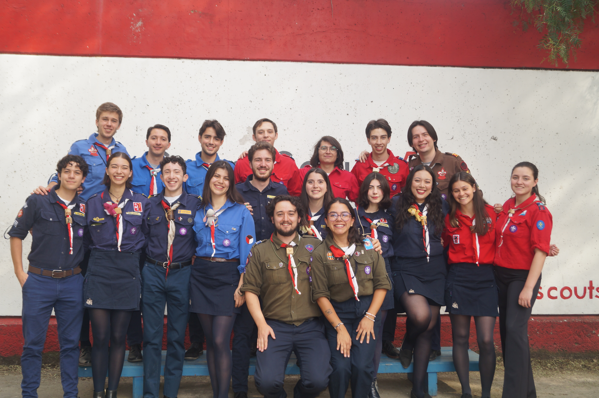
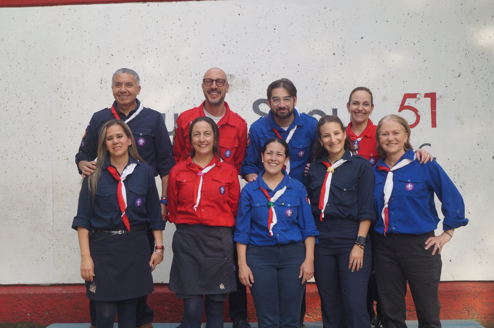

NOSOTROS
Desde 1957, formando líderes a través del escultismo en Jardines del Pedregal, CDMX.
NUESTRA TRAYECTORIA
Desde 1957, el Grupo Scout 51 ha formado generaciones de jóvenes comprometidos.
El 13 de noviembre de 1957, los Misioneros del Espíritu Santo fundaron el Grupo Scout 51 con tres ramas: Lobatos, Tropa y Clan.
El grupo se volvió mixto, creando las secciones de Pioneras, Sikas y Lahinis, abriendo las puertas para niñas y jóvenes.
El Grupo 51 continúa formando líderes cada sábado en el Parque Luis Barragán, Jardines del Pedregal. Con cuatro secciones activas.
NUESTRA MISIÓN
Contribuir a la educación de los jóvenes a través de un sistema de valores basado en la Promesa y la Ley Scout, para ayudar a construir un mundo mejor.
Dejar el mundo en mejores condiciones de como lo encontramos — ese es el legado que buscamos construir cada sábado.

¿CÓMO FUNCIONAMOS?
El Grupo 51 es un grupo de jóvenes, para jóvenes, que busca contribuir por medio de los valores y actividades del escultismo en la formación integral de jóvenes como ciudadanos comprometidos y líderes en su comunidad.

CONSEJO
Integrado por los jefes y las jefas de cada rama, jóvenes entre 19 y 24 años. Son quienes planean, ejecutan y evalúan las actividades. También Jefatura de Grupo forma parte del Consejo.

VOCALES
Papás y mamás que acompañan a los jefes de cada rama. Son el principal enlace de comunicación entre Jefatura y las familias, y ayudan a administrar pagos e inscripciones.

COMITÉ
Conformado por Jefatura de Grupo, Tesoreros y Secretarios. Jefatura es la máxima autoridad del grupo. Comité y Consejo trabajan en conjunto para mejorar al grupo constantemente.
PROMESA Y LEY SCOUT
LA PROMESA SCOUT
Yo prometo por mi honor, hacer cuanto de mí dependa para cumplir mis deberes para con Dios y mi Patria, ayudar al prójimo en toda circunstancia y cumplir fielmente la Ley Scout.
LA LEY SCOUT
1. El Scout cifra su honor en ser digno de confianza.
2. El Scout es leal.
3. El Scout es útil y ayuda a los demás sin pensar en recompensa.
4. El Scout es amigo de todos y hermano de todo Scout.
5. El Scout es cortés y caballeroso.
6. El Scout ve en la naturaleza la obra de Dios.
7. El Scout obedece sin réplica y no hace nada a medias.
8. El Scout sonríe y canta en sus dificultades.
9. El Scout es económico, trabajador y cuidadoso.
10. El Scout es limpio y sano; puro en pensamiento, palabra y acción.
ÚNETE A NUESTRA HISTORIA
Forma parte del Grupo Scout 51. Ven a conocernos cualquier sábado.
ESCRÍBENOS POR WHATSAPP